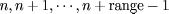
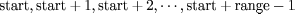

|
 |
 |
 |
|
|
|
|
|
A display list is a list of GL commands grouped together for later execution. Each display list has a unique integer identifier. A display list is started by calling
void EZ_NewList(int lnum, int mode);
This function starts a display list.
Possible modes are
mode specifies a mode, either EZ_COMPILE or
EZ_COMPILE_AND_EXECUTE.
If mode is EZ_COMPILE,
the subsequent gl commands are not executed as they are placed in
the display list. If mode is EZ_COMPILE_AND_EXECUTE, then
the commands are executed, and placed in the display list.
A display list is completed by calling
void EZ_EndList(void);
To execute the commands saved on a display list, use
void EZ_CallList(int lnum);
To destroy a display list, use
void EZ_DestroyList(int lnum);
To test whether or not an integer identifies a display list, use
int EZ_IsList(int lnum);
It is also possible to manipulate multiple lists a time.
int EZ_GenLists(int range);
This function returns an integer such that the indices
 are not currently used.
int EZ_CallLists(int start, int range);
This function executes the commands on the lists .
int EZ_DeleteLists(int start, int range);
This function delete the display lists with indices .
|
|
|
|
|
HTML Documentation Maintainance:Arturo Espinosa
<arturo@nuclecu.unam.mx>